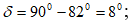
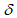
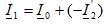
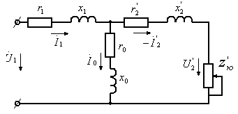

УЧ ФАЗАЛИ ТРАНСФОРМАТОРЛАРНИ ХИСОБЛАШ
Уч фазали трансформаторлар, асосан, уч фазали ток системасини трансформациялаш учун ишлатилади. Уч
фазали трансформатор умумий пўлат ўзакка эга бўлиб, алоҳида фазаларнинг токлари ҳосил қилган барча
магнит оқимлари ана шу ўзак бўйлаб туташади.
Уч фазали трансформаторнинг пўлат ўзаги остки ва устки томонлардан бирлаштирилган учта стержендан
иборат.
Уч фазали трансформаторлар чулғамларини улаш схемаларини каср тарзида кўрсатиш қабул қилинган.
Касрнинг
суратидаги белги бирламчи чулғамни, махражидаги белги эса иккиламчи чулғамни улаш схемасини билдиради.
Одатда, трансформаторнинг юқори кучланишли чулғами (манба томондаги) юлдуз схемада уланади.
Бирламчи ва иккиламчи чулғам учбурчак/учбурчак схемада уланганда бу ҳолда ҳам чулғамларнинг уланиш
туркуми 0 бўлади. Демак, бирламчи ва иккиламчи чулғамлар бир хил схемада уланганда 0 нчи уланиш туркуми
олинар экан. Бундай уланиш туркуми Υ/ Υ-0 ва /-0 тарзда белгиланади.
Уч фазали трансформаторнинг бирламчи чулғами юлдуз, иккиламчи чулғами эса учбурчак схемада уланса у
ҳолда бошқа улаш туркуми олинади. Иккиламчи чулғамни учбурчак схемада улаш учун А фазанинг бош учини В
фазанинг охирги учи билан, В фазанинг бош учини С фазанинг охирги учи билан ва ҳоказо тарзда улаш керак.
Бирламчи чулғам юлдуз, иккиламчи чулғам учбурчак схемада уланган¬да, бирламчи ва иккиламчи
чулғамларнинг
фаза кучланишла¬ри векторлари фаза бўйича мос тушса ҳам, аммо линия кучланишларининг векторлари
бир-бирларидан фаза бўйича 30 0 га ёки бир неча 30о га силжиган бўлиши мумкин.
Бирламчи чулғам
кучланишининг вектор диаграммасидагидек, ўзгаришсиз қолади. Учбурчак схемада уланган иккиламчи
чулғамнинг вектор диаграммасида фаза кучланиши вектори бирламчи чулғамнинг фаза кучланиши вектори билан
фаза бўйича мос тушади, шунинг учун вектор вектор га, эса параллел қилиб ўтказилади.
Бирламчи чулғамнинг векторлар диаграммасидан кўринадики, линия кучланишининг вектори В нуқтадан А
нуқтага йўналган, у ҳолда иккиламчи чулғамнинг линия кучланиши вектори ҳам В дан А га йўналган
(17-расм).
Агар бирламчи чулғам линия кучланишининг вектори U AB ни соат милининг ҳаракат йўналишида 30
о га буриб, уни 0
рақамида турибди деб, иккиламчи чулғамнинг линия кучланиши вектори ни ҳам 30о га бурганимизда у соатнинг
11 рақамига тўғри келади. Демак, бирламчи чулғами юлдуз, ик¬киламчи чулғами учбурчак схемада уланган уч
фазали транс¬форматор чулғамларининг уланиш туркуми 11 бўлиб, у Υ/Δ - 11 тарзда белгиланади.
Уч фазали трансформаторларнинг Υ/Υ-0, Υ/Υ0–0 ва Υ/Δ-11 сингари улаш туркумлари кўп ишлатилади.
Уч фазали трансформаторлар бўйича масала
Уч фазали трансформаторнинг қуввати S H = 160 kBA ; бирламчи ва иккиламчи чулғамларининг
уланиш схемаси Υ/Δ -11. Бирламчи
чулғам кучланишининг номинал қиймати U 1H=6000 B ; салт ишлашда иккиламчи чулғам кучланиши U
20 = 400 B; қисқа туташиш кучланиши U K = 4,5 %. Қисқа туташиш қуввати P
K = 2650 Bm ; салт ишлаш қуввати i 0 = 2,4% ; салт ишлаш токи берилган бўлса
қуйидагилар аниқлансин:
1.Фаза кучланиши U F ;
2.Трансформация коэффициенти k.
3.Бирламчи чулғам номинал токи I1H ва салт ишлаш токи;
4.Салт ишлашда қувват коэффициенти cos f0;
5.Магнит исрофи бурчаги d;
6.Трансформатор чулғамларининг актив, реактив ва тўла қаршиликлари
;
7.Юкланиш коэффициенти 0,8 ва қувват коэффициенти 0,8 бўлган ҳол учун трансформаторнинг вектор
диаграммасини
қуринг.
8.Иккиламчи кучланишнинг юкланиш коэффициентига боғлиқлик графиги U 2 = f(B) яъни ташқи
характеристикаси қурилсин.
9.Юкнинг қувват коэффиценти 0,75 бўлган ҳол учун фойдали иш коэффициентининг юкланиш коэффициентига
боғланиш графиги яъни қурилсин.
Масаланинг ечилиши:
1. Фаза кучланиши
2. Трансформация коэффициенти

3. Бирламчи чулғам номинал токи
Салт ишлаш токи
4. Салт ишлашда қувват коэффициенти

5. Магнит исрофи бурчаги

6. Чулғамларининг қаршиликлари
7.Бирламчи ва иккиламчи чулғамларнинг келтирилган қаршиликлари:
8.Магнитловчи тармоқ қаршиликлари (салт ишлаш параметрлари):
9.Трансформаторнинг ташқи характеристикасини яъни боғланишини қуриш учун иккиламчи чулғамда кучланиш
камайишини аниқлаш керак:
Бу ерда U ka, U kp -актив ва реактив қаршиликларда кучланиш пасайиши.
Юкланиш коэффициенти ўзгарганда ΔU2% ни аниқлаймиз. Бунда
гача қийматларда аниқланади. Юкнинг қувват
коэффициенти га тенг бўлади.
Трансформаторнинг иккиламчи чулғамида кучланишнинг ўзгариши қуйидаги формула билан аниқланади:
Бу формулага юкланиш коэффициенти қийматларини қўйиб аниқланган ΔU2% қийматини қўйиб
иккиламчи чулғам
кучланиши қийматларини аниқлаймиз:
10.Трансформаторнинг фойдали иш коэффициенти

бўлган ҳол учун қуйидаги формула билан аниқланади:
Энди юкнинг қандай қийматида трансформаторнинг фойдали иш коэффициенти ўзининг энг катта қийматига
эришишни аниқлаймиз:
тенг бўлса фойдали иш коэффициенти
га тенг бўлар экан.
Трансформаторнинг вектор диаграммаси қуришни фаза кучланишлари вектори U 2f дан
бошлаймиз. Юкланиш
коэффициенти 0,8 ва қувват коэффиценти 0,75 бўлган ҳол учун

Иккиламчи кучланишнинг келтирилган қиймати
I 2 токи вектори U 2f векторидан бурчагига кейинда бўлади. Бу токни аниқлашдан
олдин токни I 2 аниқлаш керак:
Шундан иккиламчи чулғамнинг келтирилган токи
Иккиламчи чулғам қаршиликларида кучланиш пасайиши
Диаграммада E 2 нинг вектори Кирхгофнинг иккинчи қонуни асосида иккиламчи чулғам учун
тузилган тенгламадан
аниқланади:
Магнит оқими вектори F M иккиламчи чулғамнинг келтирилган Э.Ю.К.и E 2 векторидан
90 0 да кейинда чизилади, салт
ишлаш токи вектори I 0 эса F M векторидан

бурчагига олдинда чизилади.
Бирламчи чулғам токи I 1 қуйидаги формуладан топилади:
Диаграммада бирламчи чулғам кучланиши вектори бирламчи чулғам занжири учун Кирхгофнинг иккинчи қонуни
асосида тузилган тенгламадан аниқланади:
Салт ишлаш токи жуда кичик бўлганлиги сабабли эътиборга олинмайди. Бунда I1 = I2 бўлади. векторини диаграммадан
ҳам аниқлаш мумкин:

Бирламчи чулғамнинг актив ва индуктив қаршиликларида кучланиш пасайиши:

20-расм. Трансформаторнинг вектор диаграммаси ва унинг эквивалент схемаси